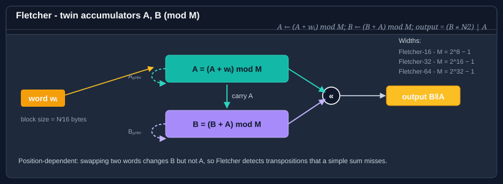

Using Fletcher
The Fletcher checksum family maintains two running accumulators, A and B, reduced modulo M = 2^(N ⁄ 2) − 1 (255 for Fletcher-16, 65535 for Fletcher-32, 4294967295 for Fletcher-64). Each input byte updates A = (A + byte) mod M, then B = (B + A) mod M. The final output is B ‖ A written big-endian. Because B depends on the running A, Fletcher catches transpositions - swapping two bytes changes B even though the simple sum A is unchanged - which a plain additive checksum misses.

Bodu.IO.Hashing provides three widths: Fletcher16, Fletcher32, and Fletcher64. All three derive from NonCryptographicHashAlgorithm, share the abstract Fletcher base, and live in the Bodu.IO.Hashing.Checksums namespace.
Note
Bodu's modulus is 2^(N ⁄ 2) − 1, not a prime. Some descriptions of Fletcher use a prime modulus; this implementation uses the original 2^k − 1 form, which reduces with a fast fold rather than a division. All three widths consume input one byte at a time regardless of N - there is no word-size blocking.
Pattern 1 - compute a digest in one call
using System.Text;
using Bodu.IO.Hashing.Checksums;
byte[] data = Encoding.UTF8.GetBytes("the quick brown fox");
var fletcher = new Fletcher32();
fletcher.Append(data);
byte[] digest = fletcher.GetCurrentHash();
string hex = Convert.ToHexString(digest); // 4 bytes, 8 hex characters, big-endian B‖A
Swap Fletcher32 for Fletcher16 or Fletcher64 depending on how much collision space you need.
Pattern 2 - the Append / GetCurrentHash / Reset lifecycle
The BCL NonCryptographicHashAlgorithm exposes three methods that Fletcher honors verbatim:
using Bodu.IO.Hashing.Checksums;
var fletcher = new Fletcher64();
fletcher.Append(chunk1); // update A and B
fletcher.Append(chunk2); // continue
byte[] partial = fletcher.GetCurrentHash(); // snapshot, non-destructive
fletcher.Append(chunk3); // still works - GetCurrentHash did not change state
byte[] full = fletcher.GetCurrentHash();
fletcher.Reset(); // back to zeroed A and B
GetCurrentHash finalizes on a copy of the accumulators, so calling it mid-stream is cheap and safe.
Pattern 3 - streaming over a file
using Bodu.IO.Hashing.Checksums;
var fletcher = new Fletcher32();
using (FileStream fs = File.OpenRead("archive.bin"))
{
byte[] buffer = new byte[64 * 1024];
int read;
while ((read = fs.Read(buffer, 0, buffer.Length)) > 0)
{
fletcher.Append(buffer.AsSpan(0, read));
}
}
byte[] fingerprint = fletcher.GetCurrentHash();
All three widths consume input one byte at a time, so any chunk boundary is safe - Append over a 64 KB buffer and Append 65 536 times byte-by-byte produce the same digest. The width affects only the modulus and the output size, not how input is fed in.
Picking a width
| Width | Modulus | Use when | Notes |
|---|---|---|---|
| Fletcher16 | 255 | Tiny frames, embedded protocols, when 16 bits of collision space is enough. | Fastest; comparable to a CRC-16 for accidental noise on short inputs. |
| Fletcher32 | 65535 | General-purpose file and buffer checksums; the most common choice. | Cheaper to compute than CRC-32; weaker burst guarantee. |
| Fletcher64 | 4294967295 | Large buffers where a 32-bit space is uncomfortable. | Rarely needed, but useful for very long streams. |
What Fletcher catches - and what it misses
Fletcher detects every single-bit error and every adjacent-byte transposition, at a fraction of CRC's per-byte cost. It does not match a CRC's burst guarantee, and the 2^k − 1 modulus introduces a documented blind spot:
- Because
0andMare congruent under the modulus, a byte that should drive an accumulator toMleaves it at0instead. A run of bytes whose contribution is a multiple ofMcan therefore go undetected. - A block of all-
0x00bytes is indistinguishable from an absent block of the same length - both leaveAandBunchanged. Fletcher cannot detect the insertion or deletion of zero bytes. - There is no per-position burst guarantee of the kind a polynomial CRC provides.
These are acceptable when you control both endpoints and the channel is benign; they are why a wire format that must survive an arbitrary physical link specifies a CRC instead.
Fletcher vs CRC
- CRC is defined by polynomial arithmetic over GF(2). It is better at detecting bursts of errors that align with its polynomial structure. Reach for it when you need to match a standard on the wire (zlib, PNG, Modbus, etc.).
- Fletcher is defined by two running sums. It is cheaper to compute on a general-purpose CPU and still catches transpositions. Reach for it when you control both endpoints and want a simple, fast, position-dependent checksum.
Both are non-cryptographic - neither resists a motivated adversary. If you need authentication, see the cryptography hashing guide (SipHash, Tiger, Merkle trees).
Where to go next
- Using CRC - the other checksum family in this package.
- Bodu.IO.Hashing namespace page - key types and design notes.
- Hashing & Cryptography guides - every guide in this topic, across Bodu.IO.Hashing and Bodu.Security.Cryptography.